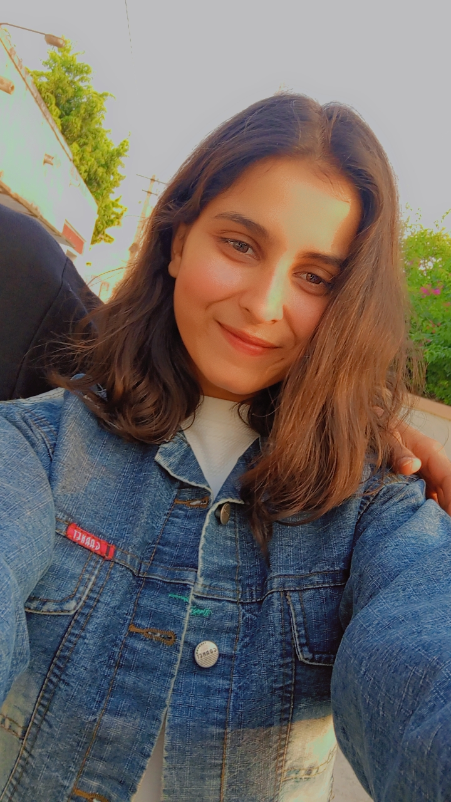

DETAILSUrvashi Sharma B.Tech in AI & Data Science | 3rd Year Student Email: sharmaurvashi@gmail.com 📞 +91-9255664975 LinkedIn: urvashis.linkedin.com/bin/urvashisharma GitHub: github.com/urvashisharma |
 |
Highly motivated B Tech student with strong communication skills,currently learning web development and working on personal HTML projects. Passionate about building creative and purposeful websites.